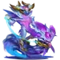
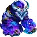

Valdur-Guide: Fähigkeiten, Skins und Teams Hero Wars Alliance
- Von: Alexandre Domingos. .
Was wäre, wenn es genauso wichtig wäre, einen Gegner zu bewegen, wie ihn zu treffen? Valdur, die Stimme von Elarite, verwandelt Positionsveränderungen auf dem Schlachtfeld in eine Chance für seine Verbündeten. Meiner Meinung nach liegt sein eigentlicher Reiz darin, ein Elarite-Team zu verbinden, statt sich allein auf die kleinen Treffer seiner Beschwörung zu verlassen.
In diesem Guide erkläre ich, wie die Anzahl seiner lebenden Elarite-Titanen einen Kampf verändert, warum Physischer Angriff Aufmerksamkeit verdient und wofür ich zuerst Ressourcen ausgeben würde. Wenn du Metida, Orm, Alecto und Pallant ausbaust, gibt Valdur dieser Investition eine klare Teamstrategie.

Beginne mit dem Unterschied zwischen direktem Schaden und dem Nutzen für das Team: Kind von Elarite stößt Gegner zurück und zieht sie heran, während Elarite-Resonanz eine größere Anzahl lebender Elarite-Titanen in der Aufstellung belohnt. Der Verlust eines Verbündeten kann daher mehr verändern als nur deinen verursachten Schaden.
Die folgenden Prioritäten sind meine Einschätzung seiner aufgeführten Mechaniken. Die Bewertungen dienen als Orientierung für den Ausbau und sind keine Rangliste auf Grundlage gemessener Siegquoten.

📋 Valdur-Inhaltsverzeichnis
Wer ist Valdur in Hero Wars Alliance?
Valdur ist die Stimme von Elarite, ein Beschwörer in der hinteren Reihe, der gegnerische Fähigkeiten unterbricht und wiederholt die Positionen der Gegner verändert. Zusammen mit Metida, Orm, Alecto und Pallant vervollständigt er die fünfköpfige Elarite-Aufstellung.

- Rolle: Beschwörer
- Element: Elarite
- Position: Hintere Reihe
- Hauptattribut: Physischer Angriff
Valdurs aufgeführte Werte
- Gesundheit: 14,936,503
- Physischer Angriff: 528,271
- Zusätzliche Verteidigung gegen Licht- und Dunkelheitstitanen: 120,600
- Zusätzlicher Schaden gegen Licht- und Dunkelheitstitanen: 213,000
Dies sind die bereitgestellten Ausbauwerte, die als Grundlage für die folgenden Fähigkeitsbeispiele dienen.
Valdurs Vor- und Nachteile - Hero Wars Alliance
✅ Vorteile
- Stößt Gegner mit einer einzigen Beschwörung zurück und zieht sie heran.
- Unterbricht gegnerische Fähigkeitsabfolgen.
- Physischer Angriff verstärkt mehrere Teamboni.
- Ermöglicht Bewegungsschaden in einem vollständigen Elarite-Team.
- Seine Beschwörung kann nicht angegriffen werden.
❌ Nachteile
- Hängt stark von lebenden Elarite-Verbündeten ab.
- Bewegungsschaden erfordert tatsächliche Positionsveränderungen.
- Jeder Treffer der Beschwörung skaliert mit nur 10% des Physischen Angriffs.
- Die Beschwörung bleibt nur vier Sekunden bestehen.
- Die Kronenboni wirken nur gegen Licht- und Dunkelheitsgegner.
Valdurs Fähigkeiten-Guide - Hero Wars Alliance
Erfahre, wie Valdurs Beschwörung Gegner bewegt, wie Elarite-Resonanz lebende Verbündete zählt und warum Physischer Angriff seinen Schaden und die Teamboni verstärkt.
Kind von Elarite
Beschreibung im Spiel: Beschwört Kind von Elarite in der Mitte des gegnerischen Teams. Es kann sich nicht bewegen. Beim Erscheinen stößt es Gegner zurück und verursacht Schaden. Nach 4,0 Sekunden verschwindet Kind von Elarite, zieht Gegner zu sich heran und verursacht Schaden. Kind von Elarite ist ein Elarite-Titan und kann nicht angegriffen werden.

Erklärung der Fähigkeit: Stell dir die Beschwörung als vorübergehenden Anker in der gegnerischen Formation vor. Sie erscheint in der Mitte, stößt Gegner weg und verursacht Schaden. Vier Sekunden später verschwindet sie, zieht Gegner wieder zu ihrer Position und verursacht erneut Schaden. Sie kann sich nicht bewegen und nicht angegriffen werden.
Formel pro Treffer: (10% × Physischer Angriff). Bei den aufgeführten 528,271 Physischer Angriffbeträgt der angezeigte Schaden 52,827 beim Erscheinen und 52,827 beim Verschwinden.
Bedeutung im PvP: Die Positionsveränderung kann die Ausführung gegnerischer Fähigkeiten unterbrechen und schafft Gelegenheiten für den Bewegungseffekt mit fünf Elarite-Titanen. Die Beschwörung selbst ist ein Elarite-Titan, was für die Anzahl lebender Elarite-Titanen zählt, solange sie vorhanden ist.
Elarite-Resonanz
Beschreibung im Spiel: Passiv. Verstärkt verbündete Elarite-Titanen. Die Boni sind stapelbar und hängen von der Anzahl lebender Elarite-Titanen ab. Bei 2 gewährt sie zusätzlichen Schaden gegen Wasser-, Erd- und Feuertitanen. Bei 3 gewährt sie zusätzliche Verteidigung gegen Wasser-, Erd- und Feuertitanen. Bei 4 erhält Valdur beim Einsatz von Fähigkeiten 400 Energie. Bei 5 erleidet ein Gegner, dem ein verbündeter Elarite-Titan Schaden zufügt, 4 Sekunden lang einen Effekt: Er erleidet alle 0,5 Sekunden Schaden, wenn er während dieses Intervalls seine Position verändert hat. Bei 6 wird der erlittene Schaden um 50% reduziert.

Erklärung der Fähigkeit: Zähle die lebenden verbündeten Elarite-Titanen. Jede Schwelle fügt einen Bonus hinzu und behält die vorherigen Boni bei. Ein besiegter Verbündeter kann diese Anzahl verringern. Deshalb gehört es zu Valdurs Angriffsplan, die Aufstellung am Leben zu halten.
- 2 lebende Elarite-Titanen: Zusätzlicher Schaden gegen Wasser-, Erd- und Feuertitanen. Formel: (25% × Physischer Angriff), angezeigt als 132,068 bei den aufgeführten Werten.
- 3 lebende Elarite-Titanen: Zusätzliche Verteidigung gegen Wasser-, Erd- und Feuertitanen. Formel: (25% × Physischer Angriff), angezeigt als 132,068.
- 4 lebende Elarite-Titanen: Valdur erhält 400 Energie beim Einsatz von Fähigkeiten.
- 5 lebende Elarite-Titanen: Der Schaden eines verbündeten Elarite-Titanen belegt den Gegner mit einem Effekt von 4 Sekunden Dauer. Alle 0,5 Sekundenwird geprüft, ob das Ziel während des Intervalls seine Position verändert hat. Nur ein Intervall, das diese Bedingung erfüllt, verursacht Bewegungsschaden.
- 6 lebende Elarite-Titanen: Der erlittene Schaden wird reduziert um 50%.
Bewegungsschaden pro Intervall, das die Bedingung erfüllt: (0,5% × Physischer Angriff), angezeigt als 2,641 bei den aufgeführten Werten. Die Formel skaliert mit Physischem Angriff; die bereitgestellten Daten geben die Schadensart nicht an.
Wie erreichst du sechs? Fünf Elarite-Teammitglieder und das lebende Kind von Elarite können während der viersekündigen Dauer der Beschwörung zusammen sechs ergeben. Voraussetzung ist, dass alle fünf Teammitglieder am Leben bleiben; es handelt sich nicht um eine dauerhafte Schadensreduktion.
Bedeutung im PvP: Pallant, Metida und Valdur bewegen Gegner und unterstützen damit den Effekt für fünf Mitglieder. Ein stillstehendes Ziel erleidet nicht allein deshalb Schaden durch diesen Effekt, weil die Schwächung aktiv ist.
Bester Skin für den Titanen Valdur - Hero Wars Alliance
Wähle Valdurs Skin-Reihenfolge, indem du die Skalierung durch Physischen Angriff gegen Gesundheit abwägst, damit dein Elarite-Unterstützer lange genug überlebt, um seine Boni aktiv zu halten.

Standard-Skin
Physischer Angriff: +196,800
Ausbaupriorität für PvP: Sehr hoch — 1. — Verbessert beide Treffer der Beschwörung, die Schadens- und Verteidigungsboni sowie den Bewegungsschaden.
Ausbaupriorität für den Dungeon: Sehr hoch — 1. — Verstärkt dieselben skalierenden Effekte, wenn deine verfügbare Aufstellung sie aktivieren kann.

Urzeit-Skin+
Gesundheit: +5,255,950
Ausbaupriorität für PvP: Hoch — 2. — Erhöht die Überlebensfähigkeit, ohne seine Formeln für Physischen Angriff direkt zu verbessern. Ziehe diesen Skin vor, wenn Valdur stirbt, bevor er seine Beschwörung einsetzen kann.
Ausbaupriorität für den Dungeon: Hoch — 2. — Eine Investition in die Überlebensfähigkeit, wenn Abnutzung ihn daran hindert, die Elarite-Anzahl des Teams aufrechtzuerhalten. Priorisiere ihn zuerst, wenn das Überleben dein Engpass ist.
Der angegebene Gesamtwert gehört zum Urzeit-Skin+; addiere ihn nicht erneut als separaten Bonus des Basis-Skins.
Valdurs Artefakt-Ausbaupriorität - Hero Wars Alliance
Vergleiche Valdurs Artefakte nach ihren Teamboni, ihrer persönlichen Skalierung und ihren Einschränkungen je nach Gegner. Investiere dann in die Werte, die deiner Elarite-Aufstellung am häufigsten helfen.
Meine allgemeine Reihenfolge lautet Siegel, Waffe und dann Krone. Die folgende Darstellung behält Waffe, Krone und Siegel in ihrer ursprünglichen Reihenfolge bei; jede Prioritätsangabe zeigt die Investitionsreihenfolge.

Zorvals Ruf (Waffenartefakt)
Physischer Angriff: +120,000
Zorvals Ruf gewährt dem Team einen Bonus auf Physischen Angriff mit einer angegebenen Aktivierungschance von 100%. Das ergänzt Valdurs Skalierung durch Physischen Angriff. Die bereitgestellten Werte geben die Dauer des Bonus nicht an.
Ausbaupriorität für PvP: Hoch — 2. — Die Unterstützung des Teamangriffs ist wertvoll, sobald Valdur zuverlässig lange genug überlebt, um seine Fähigkeiten einzusetzen.
Ausbaupriorität für den Dungeon: Hoch — 2. — Unterstützt die Offensive des Teams, während das Siegel zuerst dauerhafte persönliche Überlebensfähigkeit und Skalierung bietet.

Elarite-Krone (Kronenartefakt)
Zusätzlicher Schaden gegen Licht- und Dunkelheitstitanen: +213,000
Zusätzliche Verteidigung gegen Licht- und Dunkelheitstitanen: +120,600
Diese zusätzlichen Schadens- und Verteidigungswerte gelten gegen Licht- und Dunkelheitstitanen. Sie bieten nicht denselben Schutz gegen Wasser-, Erd-, Feuer- oder Elarite-Gegner.
Ausbaupriorität für PvP: Mittel — 3. — Erhöhe ihre Priorität bei häufigen Kämpfen gegen Licht und Dunkelheit; ihr Nutzen hängt vom gegnerischen Element ab.
Ausbaupriorität für den Dungeon: Mittel — 3. — Die zusätzliche Verteidigung kann gegen Licht- und Dunkelheitsgegner beim Überleben helfen. Prüfe jedoch vor der Investition die Gegner des Raums. Allein die Notwendigkeit, im Dungeon zu überleben, macht diese Krone nicht universell einsetzbar.

Chthonisches Beschwörungssiegel (Siegelartefakt)
Physischer Angriff: +97,500
Gesundheit: +3,975,000
Ausbaupriorität für PvP: Sehr hoch — 1. — Verbindet dauerhafte Skalierung durch Physischen Angriff mit Gesundheit und unterstützt damit seine Fähigkeiten und sein Überleben in jedem Kampf.
Ausbaupriorität für den Dungeon: Sehr hoch — 1. — Gesundheit hilft ihm, am Leben zu bleiben, während Physischer Angriff seine Beschwörung und die anwendbaren Resonanzboni verbessert.
Dies sind die Werte des Chthonischen Beschwörungssiegels, nicht die eines gewöhnlichen Beschwörungssiegels.
Wie du den Titanen Valdur in Hero Wars Alliance konterst
Die eindeutigste Gegenstrategie setzt bei seiner Abhängigkeit von lebenden Verbündeten und gegnerischer Bewegung an. Dies sind aus seinen Fähigkeiten abgeleitete Strategien und keine getestete Liste bestimmter Titanen, die ihn kontern.
- Verringere die Elarite-Anzahl: Wenn du ein Mitglied einer Aufstellung mit fünf Elarite-Titanen besiegst, sinkt ihre natürliche Anzahl unter die Schwelle für Bewegungsschaden. Die Beschwörung kann diese Anzahl vorübergehend wieder erhöhen, achte also auf ihren Zeitpunkt.
- Begrenze Bewegung, wenn möglich: Der Effekt mit fünf Elarite-Titanen erfordert in jedem geprüften Intervall eine Positionsveränderung. Eine Markierung allein reicht nicht aus.
- Übe außerhalb der Beschwörungsdauer Druck aus: Bei fünf lebenden Elarite-Teammitgliedern hängt der Verteidigungsbonus der Sechser-Schwelle davon ab, dass Kind von Elarite vorhanden ist.
- Interpretiere Elementarboni richtig: Licht- und Dunkelheitsgegner stehen den Kronenboni gegenüber; Wasser-, Erd- und Feuergegner den Resonanzboni bei zwei und drei Elarite-Titanen. Kein Elementargegensatz garantiert automatisch einen erfolgreichen Konter.
Ich würde Kämpfe mit und ohne den ersten Elarite-Verlust vergleichen, bevor ich ein Konterteam beurteile. Valdurs Position in der hinteren Reihe bedeutet außerdem, dass es von den tatsächlichen Möglichkeiten zur Zielauswahl des angreifenden Teams abhängt, ob es ihn erreichen kann.
Bestes Team für den Titanen Valdur - Hero Wars Alliance
| Valdur |  Pallant |
Strategie der Teamzusammenstellung
Valdur, Metida, Orm, Alecto und Pallant stellen fünf Elarite-Teammitglieder. Pallant, Metida und Valdur bewegen Gegner und ermöglichen dadurch den Bewegungsschaden der Resonanz, nachdem ein verbündeter Elarite-Titan einem Ziel Schaden zugefügt hat. Orm und Alecto vervollständigen die Anzahl von fünf Mitgliedern.
Wenn alle fünf leben, kann Kind von Elarite vorübergehend die sechste Einheit für die Zählung und die Reduktion des erlittenen Schadens bereitstellen. Meine Priorität ist, die vollständige Aufstellung lange genug am Leben zu halten, damit diese Kontroll- und Verteidigungsphasen einen Unterschied machen.
Schwächen des Teams und Überlegungen
Schwach gegen: Strategien, die einen Elarite-Verbündeten früh ausschalten oder regelmäßige Positionsveränderungen verhindern, können die wichtigste Synergie der Aufstellung schwächen. Dies beschreibt eine mechanische Schwäche, keinen nachgewiesenen verlorenen Gegnervergleich.
Strategische Überlegungen: Die Boni hängen von lebenden Titanen ab, und der Bewegungseffekt prüft Positionsveränderungen jede halbe Sekunde. Gehe nicht davon aus, dass jede Markierung in jedem Intervall Schaden verursacht. Teste deinen tatsächlichen Ausbaustand, bevor du mehr investierst.
⭐ Valdur: Alexandres abschließendes Urteil
Ich empfehle, Valdur auszubauen, wenn du dich für die vollständige Elarite-Aufstellung entschieden hast. Der direkte Schaden seiner Beschwörung ist nur ein Teil seines Nutzens: Positionsveränderungen, stapelbare Boni und die vorübergehende Zählung des sechsten Elarite-Titanen geben dem Team einen schlüssigen Kampfplan.
Ich würde mit dem Standard-Skin und dem Chthonischen Beschwörungssiegel beginnen und danach Zorvals Ruf ausbauen. Ziehe den Urzeit-Skin+ vor, wenn er früh stirbt, und erhöhe die Priorität der Elarite-Krone, wenn Kämpfe gegen Licht und Dunkelheit dies rechtfertigen. Investiere in das Problem, dem dein Team tatsächlich gegenübersteht, und behalte dabei die Synergie der fünf Mitglieder im Blick.
Entdecke neue Fähigkeiten mit unseren empfohlenen Guides!


Hinterlasse deine Meinung!
Hat dir unser Titanen-Guide für Valdur gefallen? Gibt es etwas, das du nicht verstanden hast oder für das du Änderungen vorschlagen möchtest? Wir laden dich ein, im Kommentarbereich auf der Blogseite von Alexandre Games mitzumachen. Teile gerne deine Meinung, kläre deine Fragen und bringe deine Vorschläge ein.
Klicke auf die Schaltfläche unten, um loszulegen: